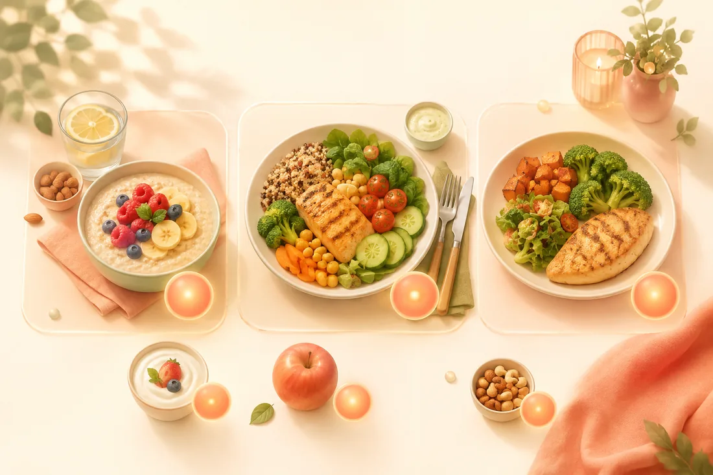

Sin esfuerzo, o no cuenta
Si una función añade fricción al registrar una comida, está mal, por muy ingeniosa que sea. Registrar tiene que seguir siendo lo bastante barato como para hacerlo siempre, o no se hará nunca.
Fotocal es una app independiente, hecha en pequeño. Sin inversores, sin departamento de marketing, sin objetivos de crecimiento. Solo un registro de nutrición construido como creíamos que debía funcionar.
Esta página va de por qué existe y de lo que creemos. A propósito tiene poca biografía y mucha intención.
Fotocal nació como la herramienta que queríamos para nosotros: algo que te dice qué hay en tu plato sin convertir la cena en introducir datos, y sin opinar sobre cómo deberías vivir.

Esto es lo que lo empezó todo. Casi todo el mundo come tres o más veces al día, todos los días, toda su vida, y casi nadie tiene una idea real de a qué suma todo eso. No porque no le importe. Porque mirarlo siempre ha costado demasiado trabajo.
La forma tradicional de averiguarlo consiste en esperar a una cita y luego sentarte en una consulta intentando recordar qué comiste el martes pasado. Y no te acuerdas. Nadie se acuerda. Así que lo reconstruyes, más o menos, y recibes consejos basados en una reconstrucción aproximada, y luego esperas meses y lo repites. No es que el consejo esté mal: es que la foto sobre la que se apoya es una suposición.
Mientras tanto, lo que más ayudaría es algo que podrías haber tenido desde el principio: ver lo que comes mientras lo comes. Sin recordarlo. Sin estimarlo semanas después. Simplemente ahí, delante de ti, el mismo día que pasó.
Queremos que la gente pueda ver su propia alimentación en tiempo real, y ver cómo ocurre su propia transformación, en vez de que sea invisible hasta que otra persona se la señala.
Esa es toda la idea. No es una dieta. No es un plan que nos hayamos inventado y queramos que sigas. Es visibilidad: la clase de visibilidad corriente y cotidiana que convierte el "creo que como bastante bien" en algo que de verdad sabes.
Si registrar cuesta, lo dejas. Eso no es un defecto de carácter, es aritmética: cualquier cosa que tengas que hacer tres veces al día tiene que salir casi gratis o no aguantará el mes. Todas las apps que te obligaban a buscar en una base de datos, encontrar tu comida, adivinar la ración y confirmarla te estaban pidiendo unos minutos al día, y unos minutos al día es más de lo que casi nadie va a pagar.
Así que el objetivo era que costara una foto. Apuntas la cámara al plato y el trabajo pasa a nuestro lado en vez del tuyo. Eso no es un truco: es la única versión del registro que hemos visto que la gente sigue haciendo al tercer mes, porque es la única lo bastante barata como para seguir haciéndola.
Todo lo demás sale de ahí. Registro por foto, voz o código de barras, porque el método más rápido es el que de verdad vas a usar. Coach Kal gratis e ilimitado, porque la parte que más probablemente cambie cómo comes no debería ser la parte por la que hay que pagar. El progreso mostrado como tendencia y no como número diario, porque una mañana suelta en la báscula no significa nada y agobiarse con ella no ayuda a nadie.
Hay una diferencia real entre que te cuenten cómo comes y verlo. Que te lo cuenten es algo que te pasa de vez en cuando. Verlo es algo que es tuyo, cada día, y cambia lo que haces a continuación sin que nadie tenga que decirte nada.
Eso es lo que queremos que te dé Fotocal. No instrucciones. Visibilidad. Registras una semana y la foto aparece sola: de dónde salen las calorías de verdad, qué días se sostienen, qué pinta tiene tu proteína cuando no es una suposición. A casi todo el mundo le sorprende la respuesta, y que sorprenda es útil. No puedes cambiar un patrón que no ves.
Y la transformación también se vuelve visible, que importa más de lo que parece. El progreso es lento y desde dentro es casi invisible: no notas el cambio en un espejo que miras a diario. Las tendencias de peso, las medidas, los macros, las rachas: hacen legible lo lento. Esa es la diferencia entre un mes que pareció inútil y un mes que ves que funcionó.
Queremos ser muy claros con esto, porque importa. Fotocal no sustituye la atención profesional y no está diseñado para ayudarte a evitarla. Más bien al contrario: lo más útil de tener tus datos reales de alimentación es que puedes entrar en una consulta con ellos.
En vez de intentar recordar el martes pasado, puedes enseñar cómo han sido de verdad los últimos tres meses. Un médico o un dietista-nutricionista que trabaja con datos reales puede darte consejos muchísimo mejores que uno que trabaja con tu mejor suposición: eso es una conversación mejor, no una consulta que te saltas. Si tienes una preocupación de salud, ve a que te vea alguien. Y llévate tus datos.
No es un póster de oficina. Son las decisiones que de verdad han determinado cómo se construyó la app, incluidas las que nos han costado algo.
Si una función añade fricción al registrar una comida, está mal, por muy ingeniosa que sea. Registrar tiene que seguir siendo lo bastante barato como para hacerlo siempre, o no se hará nunca.
Sin números en rojo, sin culpa, sin una app decepcionada contigo. Te has comido un postre. Es un postre. La culpa no ha hecho nunca que nadie coma mejor, y hace que mucha gente deje de registrar, que es peor.
El análisis por foto da una estimación, no un resultado de laboratorio. Los guisos, los platos mezclados y todo lo que va bajo una salsa son difíciles de verdad. Lo decimos, y puedes corregir cualquier escaneo antes de guardarlo.
No te vamos a decir que perderás una cantidad concreta en un tiempo concreto. Nadie honesto puede. Fotocal te enseña lo que estás haciendo; lo que pase después depende de muchas cosas que no son una app.
Construida primero en español y a la par en inglés. Cada pantalla, cada respuesta de Coach Kal y cada informe se leen con naturalidad en los dos — comer bien no debería exigir leer en tu segundo idioma.
No los vendemos. Puedes eliminar tu cuenta y todo lo que contiene cuando quieras, y es una opción normal dentro de la app, no un formulario que hay que suplicar.
Fotocal se construye y se mantiene de forma independiente, por un equipo muy pequeño. No hay oficina, no hay inversores y no hay departamento de crecimiento. Preferimos decirlo claro antes que inventarnos una historia fundacional con un número grande dentro.
Eso tiene desventajas reales. Vamos más despacio que una empresa con cincuenta ingenieros. Hay cosas que quizá quieras y que todavía no están hechas. Pero también significa que nadie nos está empujando a añadir un patrón oscuro para cuadrar un número trimestral, y que cuando escribes a soporte, llega a la gente que hizo esto.
Habrás notado que en esta página no hay número de usuarios, ni valoraciones, ni citas de prensa, ni premios. No es modestia: es que no vamos a inventarnos ninguno, y no creemos que debas fiarte de una web que lo hace.
Fotocal es una herramienta de registro, no consejo médico. No diagnostica nada y no es un tratamiento. Si tienes alguna condición de salud, estás embarazada, estás gestionando un trastorno de la conducta alimentaria, o simplemente no sabes si un cambio es adecuado para ti, habla antes con un médico o con un dietista-nutricionista colegiado. Y llévate tus datos de Fotocal: harán que esa conversación sea mejor.
Fotocal se descarga gratis y se usa gratis. Una foto es todo lo que hace falta para empezar.
DISPONIBLE EN Google Play